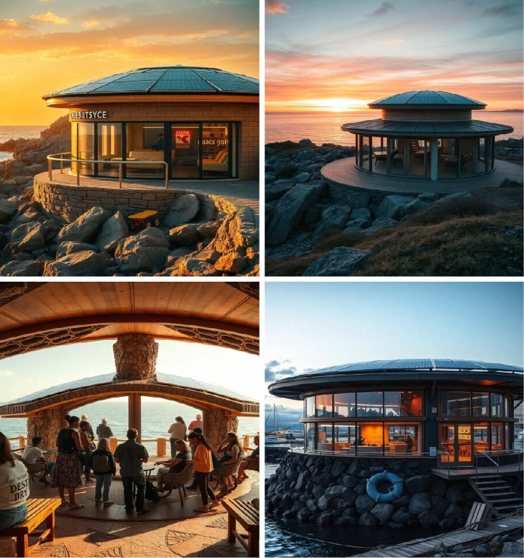
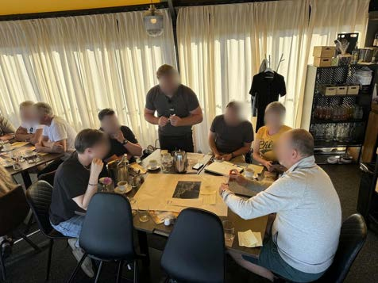
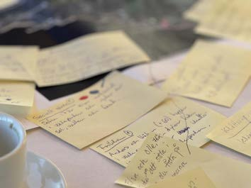
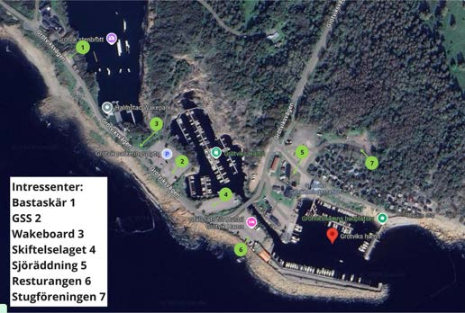

Trafikverket · 2024–2025 · Research Lead & Workshop Designer
Projekt Grötvik
Designing for sustainable tourism and mobility in a coastal village — without erasing what makes it feel like home.


The challenge
Grötvik needed to support growing seasonal tourism and improve mobility without sacrificing the local identity residents value. I led the research — designing and running workshops, conducting interviews, and synthesising the material into insights the team could act on.

Process
Using a design ethnography approach, I engaged residents, visitors, and local authorities through participatory sessions — future scenarios, value mapping, and open interviews. That surfaced the real tension in the brief: accessibility, seasonality, and identity pulling in different directions.

Outcome
The insights shaped FLEX-HIVE — a modular, mobile hub combining physical and digital touchpoints. It flexes across seasons, supports micromobility, and gives residents and visitors a shared point of orientation and interaction, built directly from what stakeholders told us mattered.
Reflection
This project sharpened my field research and participatory design practice, and reinforced how much better design gets when it's rooted in the people who'll actually live with it.